Reinigung mit Wasser
Wasser ist eine natürliche und gründliche Ergänzung zur täglichen Reinigung.
EcoBum von Pudado
EcoBum von Pudado ist das moderne Plug-and-Play-Handbidet für Reinigung mit Wasser — frisch, sanft und einfach in deinem Badezimmer.
Kein Strom · Einfache Installation · Reinigung mit Wasser · Für den täglichen Gebrauch
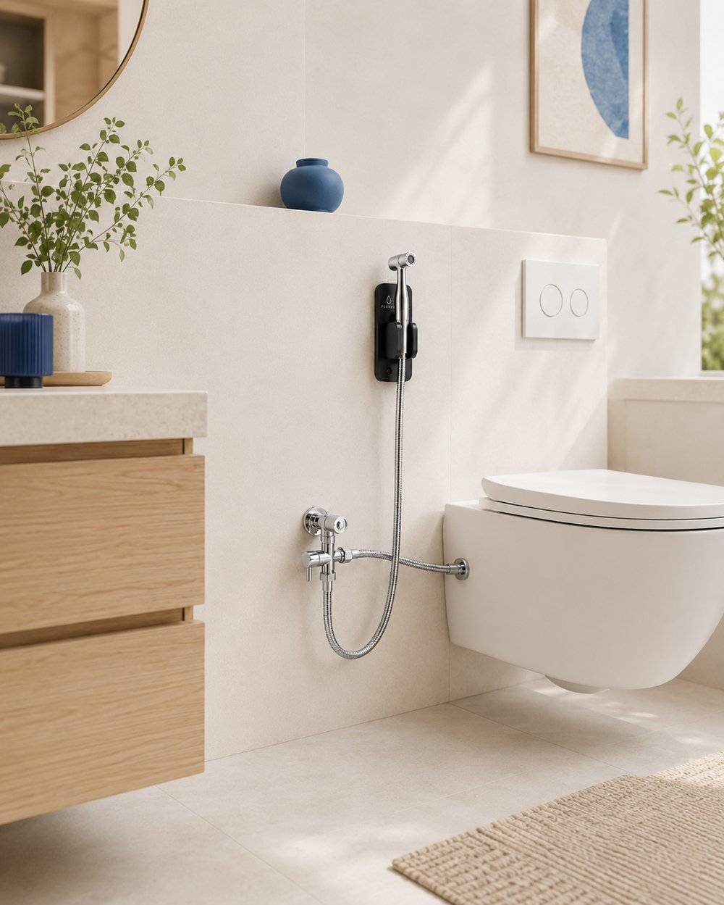
Das Prinzip
Wasser wird überall dort genutzt, wo echte Sauberkeit wichtig ist. EcoBum bringt dieses einfache Prinzip in deine tägliche Routine — klar, sanft und unkompliziert.
Vorteile
Wasser ist eine natürliche und gründliche Ergänzung zur täglichen Reinigung.
Die Reinigung mit Wasser kann trockenes Reiben reduzieren und sich besonders angenehm anfühlen.
Schnell angeschlossen, intuitiv genutzt und für die tägliche Badezimmerhygiene entwickelt.
Eine kleine Veränderung für mehr Frische, Komfort und ein modernes Badezimmergefühl.
EcoBum kann dabei helfen, den Verbrauch von Toilettenpapier und Feuchttüchern im Alltag zu reduzieren.
Wer weniger Papier und Feuchttücher nutzt, kann Abfall reduzieren und Ressourcen bewusster einsetzen.
Produkt
EcoBum wurde für Menschen entwickelt, die Hygiene einfacher, klarer und angenehmer machen möchten. Statt sich nur auf trockenes Papier zu verlassen, ergänzt EcoBum die tägliche Reinigung mit Wasser. Das Ergebnis: ein moderneres, frischeres und komfortableres Badezimmergefühl.
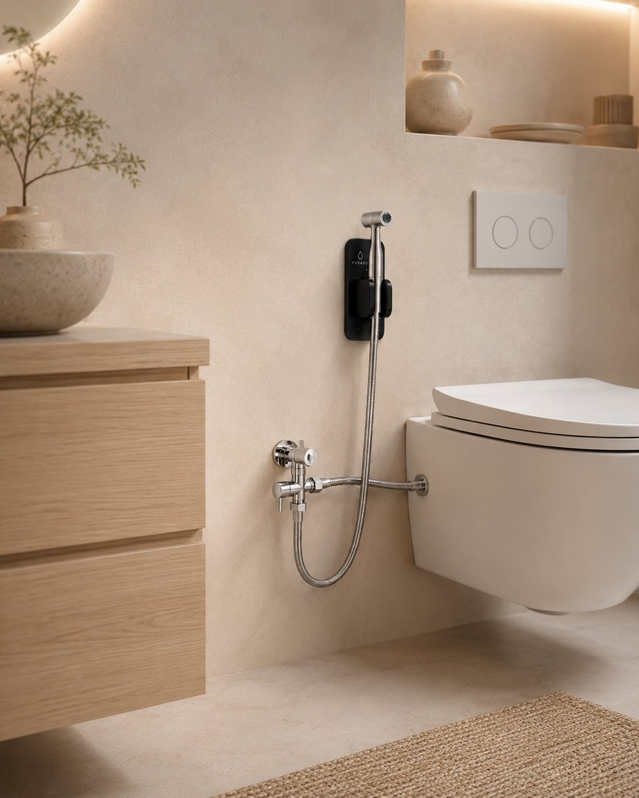
Lieferumfang
Diese Komponenten sind für das EcoBum Home Set vorgesehen — sauber zusammengestellt, einfach gedacht und für den täglichen Gebrauch entwickelt.
Kernkomponenten
Für Installation & Sicherheit vorgesehen
Die vorgesehenen Komponenten können sich je nach finaler Produktversion noch leicht ändern.
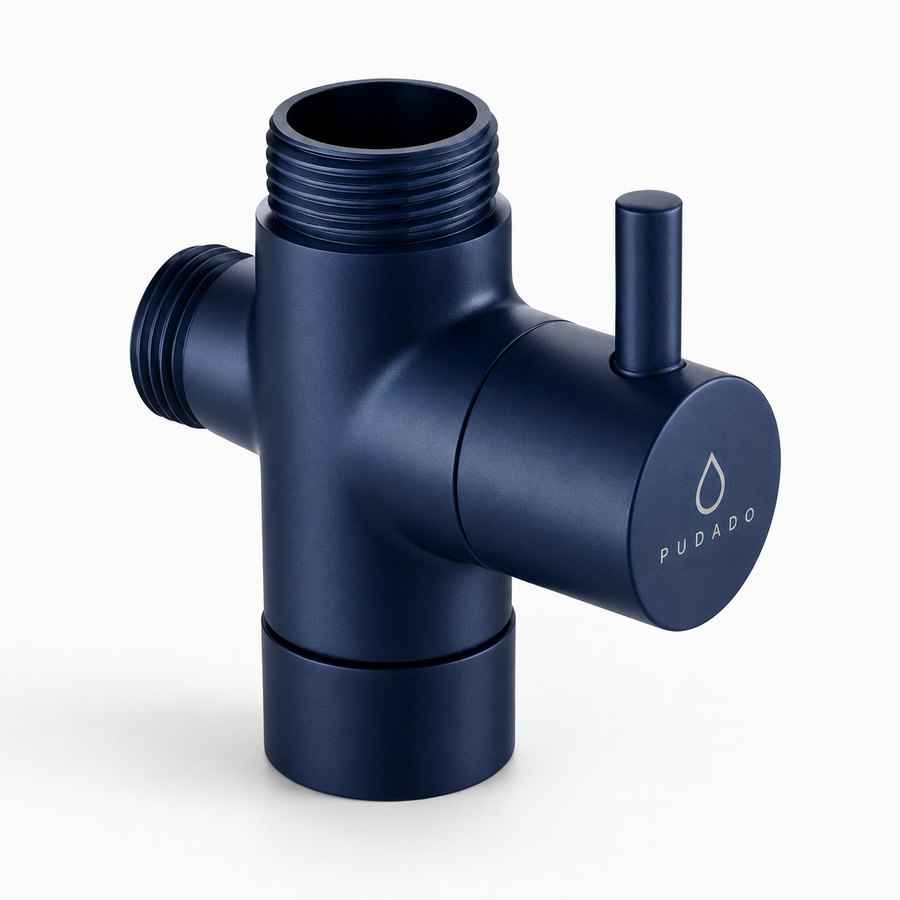
Im Badezimmer
Vom hellen Holz-Bad bis zum dunklen Stein-Look – EcoBum fügt sich ruhig und hochwertig in moderne Badezimmer ein.
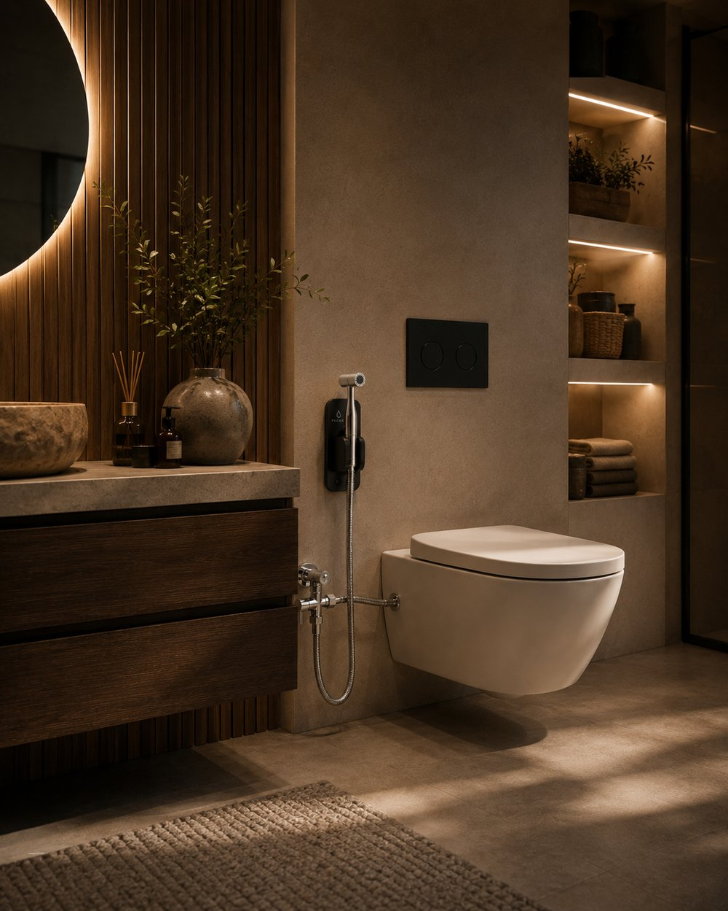
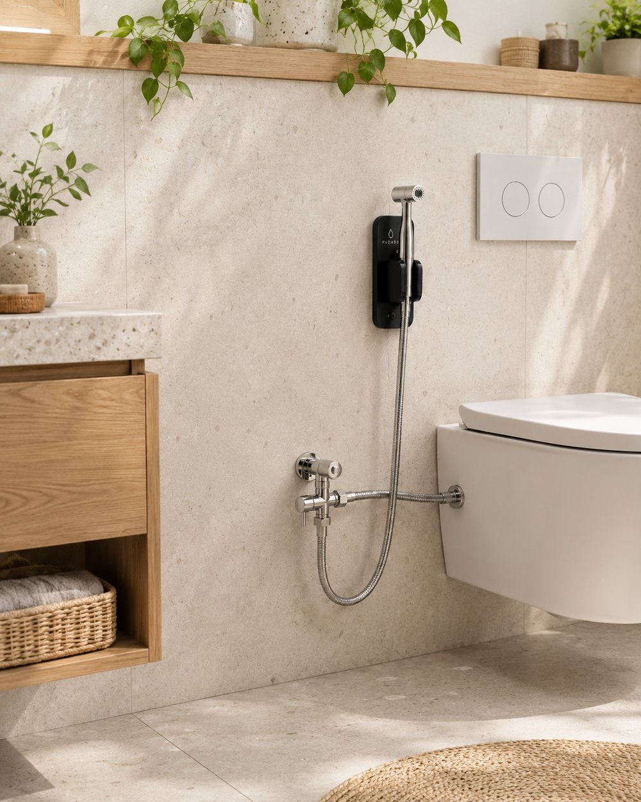
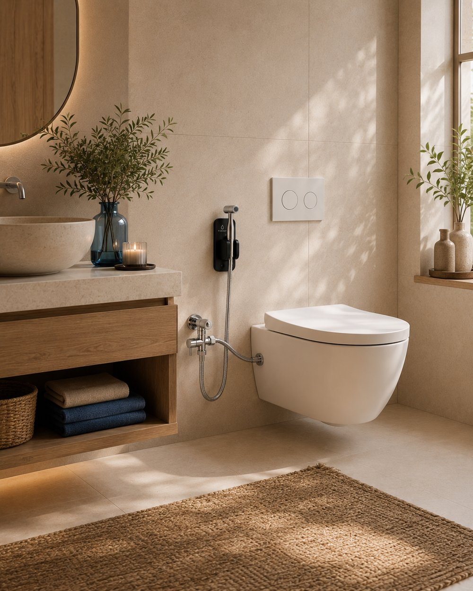
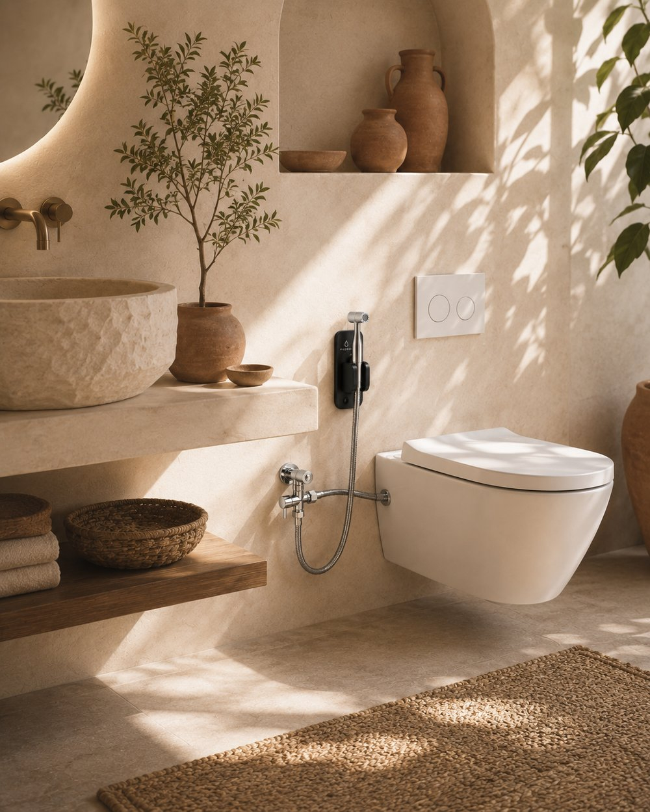
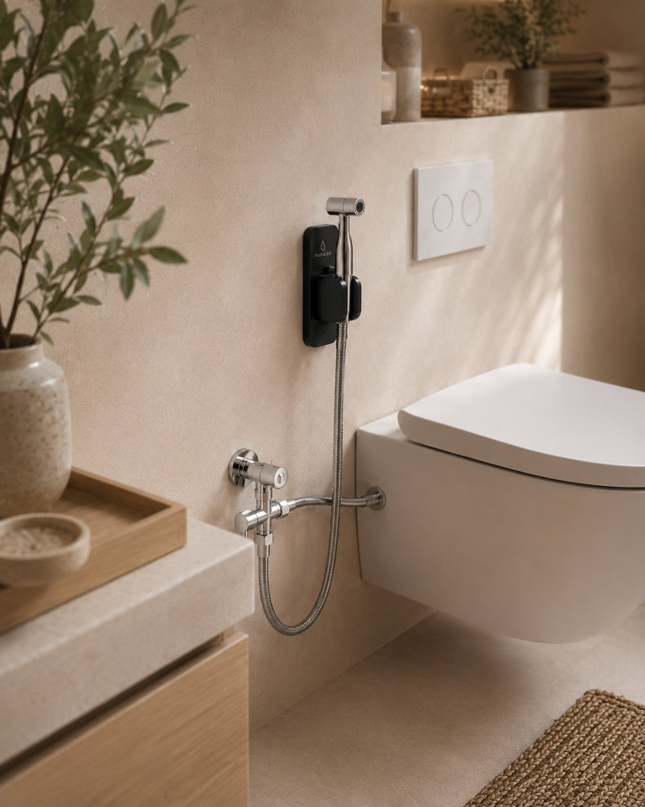
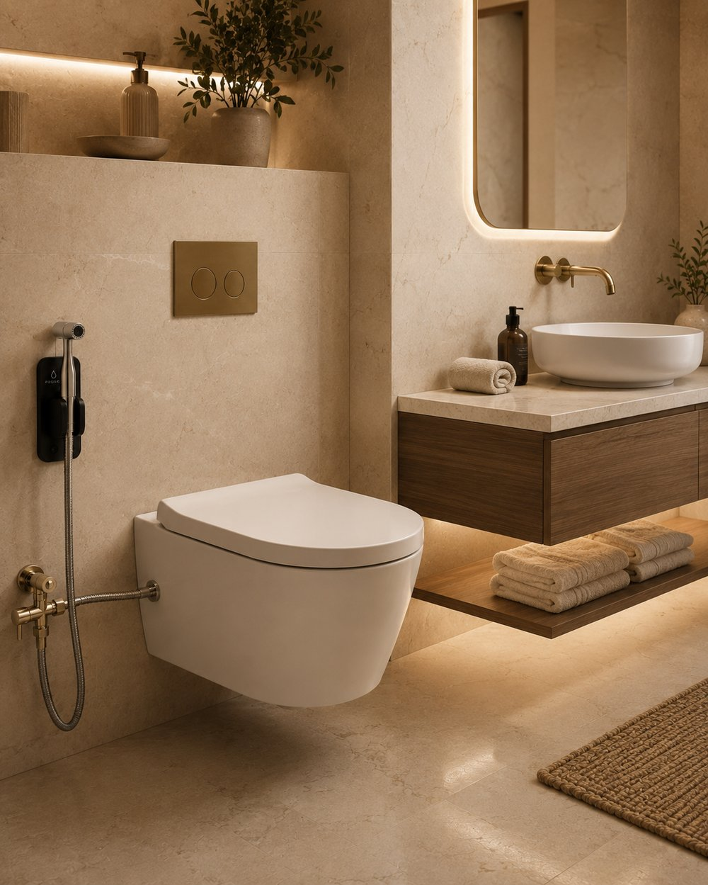
So funktioniert die Installation
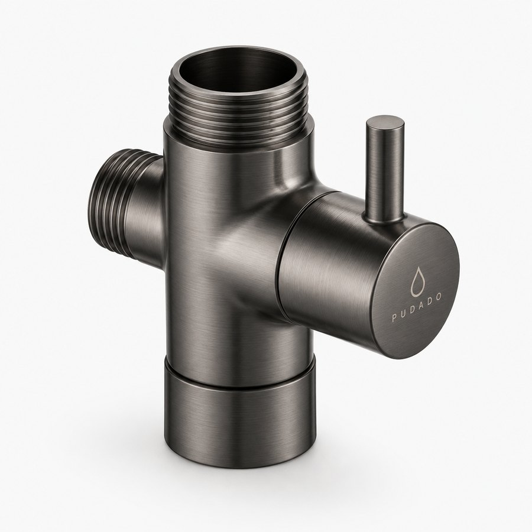
Vor jeder Installation muss das Wasser am Eckventil abgestellt werden.
Das T-Stück wird zwischen Eckventil und Zulaufschlauch gesetzt, wenn der vorhandene Anschluss kompatibel ist.
Der Brauseschlauch verbindet T-Stück und Handbidet-Sprayer.
Die Halterung kann je nach Untergrund geklebt oder geschraubt werden.
Hinweis: Die Installation kann je nach vorhandenem Wasseranschluss variieren. Bei Unsicherheit bitte fachkundige Hilfe in Anspruch nehmen.
Installations-Check
Beantworte ein paar kurze Fragen für eine erste, unverbindliche Einschätzung.
Ob ein zusätzlicher Anschluss oder Schlauch benötigt wird, muss anhand eines Fotos oder durch Fachpersonal geprüft werden.
Diese Auswertung ist eine unverbindliche Ersteinschätzung auf Grundlage deiner Angaben. Sie ersetzt keine Prüfung vor Ort und keine fachgerechte Installation. Wasseranschlüsse müssen dicht, geeignet und nach den geltenden Vorgaben ausgeführt werden.
Diese Einschätzung ist unverbindlich und ersetzt keine Prüfung vor Ort. Bei Unsicherheit bitte eine fachkundige Person fragen.
Anwendungsfälle
EcoBum ist eine einfache Ergänzung für viele Alltagssituationen – sanft, frisch und unkompliziert. Bei medizinischen Beschwerden bitte immer ärztlichen Rat einholen.
Sensible Haut
Wasser kann trockenes Reiben reduzieren und die tägliche Reinigung sanft ergänzen.
Menstruation, Schwangerschaft & Wochenbett
In sensiblen Lebensphasen kann eine vorsichtige Reinigung mit Wasser als angenehm empfunden werden. Bei Beschwerden bitte fachlichen Rat einholen.
Senioren & eingeschränkte Beweglichkeit
Ein gut erreichbares Handbidet kann die tägliche Reinigung erleichtern. Wichtig sind eine passende Installation und eine sichere Nutzung.
Familien & Alltag
Für Haushalte, die Reinigung mit Wasser und einen bewussteren Umgang mit Papier verbinden möchten.
EcoBum ist ein Hygieneprodukt und kein Medizinprodukt. Bei gesundheitlichen Beschwerden wende dich bitte an fachkundige oder ärztliche Beratung.
Toilettenpapierverbrauch realistisch einschätzen
Der Rechner zeigt eine vorsichtige Schätzung, wie viel Toilettenpapier im Alltag genutzt wird und wie sich der Verbrauch durch Reinigung mit Wasser reduzieren könnte.
Die Ergebnisse sind unverbindliche Modellschätzungen. Der tatsächliche Verbrauch hängt von Produkt, Gewohnheiten und Nutzung ab. EcoBum kann den Papierverbrauch ergänzend reduzieren, eine bestimmte Einsparung wird nicht garantiert.
Nachhaltigkeit
Nachhaltigkeit beginnt oft nicht mit großen Versprechen, sondern mit kleinen Gewohnheiten. EcoBum kann helfen, den Verbrauch von Toilettenpapier im Alltag zu reduzieren — einfach, angenehm und ohne komplizierte Umstellung.
Wer Wasser zur Reinigung nutzt, braucht häufig weniger Papier. Die tatsächliche Einsparung hängt von der persönlichen Nutzung ab.
Wasser wird weltweit für Reinigung genutzt, weil es naheliegend, sanft und gründlich ist. EcoBum bringt diese Idee ins Badezimmer.
EcoBum funktioniert mit Wasserdruck und benötigt keinen Strom. Das reduziert unnötige Komplexität im Alltag.
Wir machen keine pauschalen Umweltversprechen. Wir sagen klar: EcoBum kann helfen, Papier zu reduzieren — wie viel, hängt von der Nutzung ab.
Qualität & Technik
Jedes Teil des EcoBum Home Sets ist auf einfache Installation, sichere Nutzung und ein hochwertiges Gefühl ausgelegt.
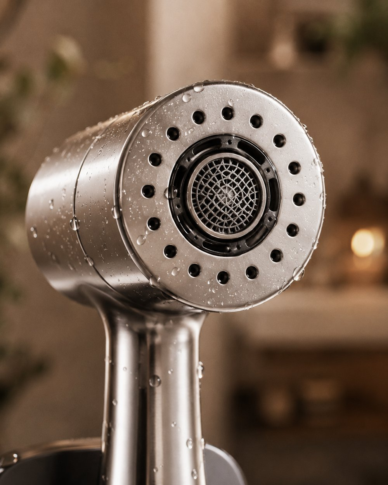
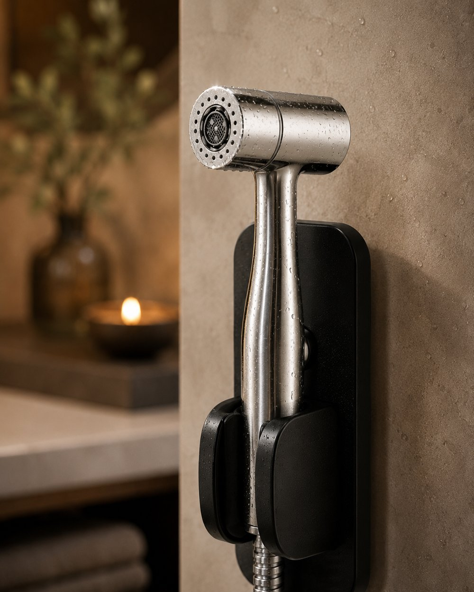
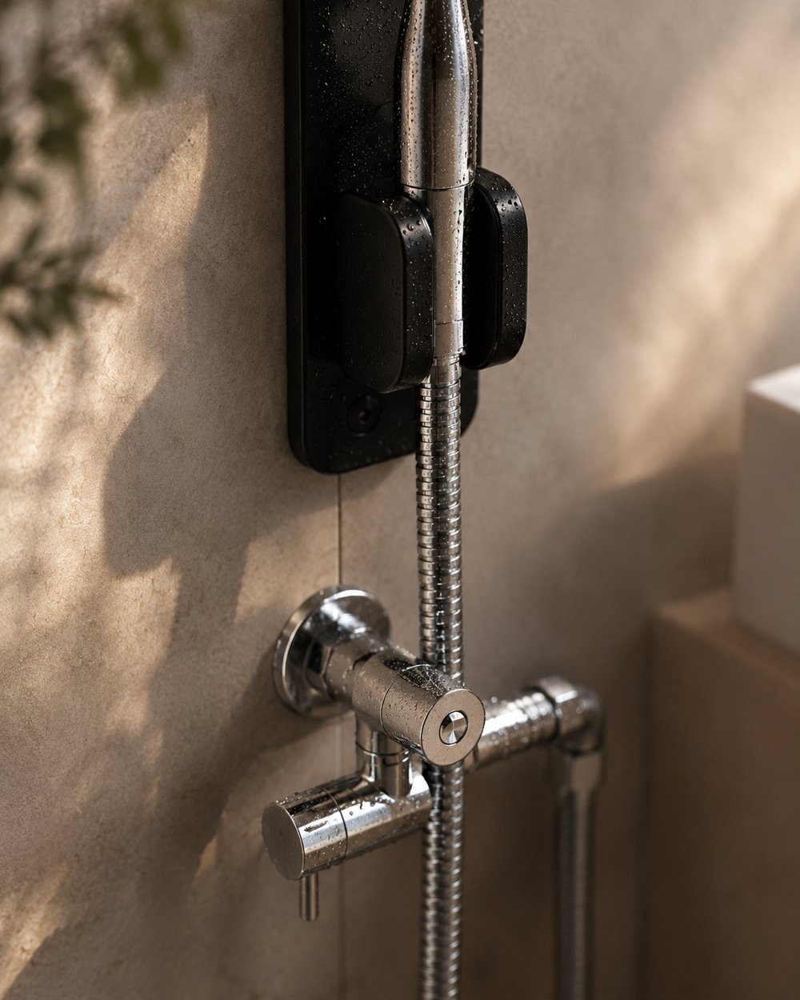
Geplante Premium-Materialrichtung, abhängig von finaler Produktversion
Mögliche Standards wie CE, DVGW, WRAS, ACS, EN 1717, REACH oder RoHS sind Ziel der Produktentwicklung und in Prüfung. Welche Zertifizierungen die finale Produktversion trägt, hängt vom finalen Lieferanten und der abschließenden Prüfung ab.
Warum Pudado?
Pudado entwickelt durchdachte Sanitärlösungen für Menschen, die Hygiene, Komfort und einen bewussteren Umgang mit Ressourcen verbinden möchten. Unser Anspruch ist es, bestehende Badezimmer einfach und sinnvoll aufzuwerten – mit klarer Funktion, modernem Design und ehrlicher Kommunikation. EcoBum ist unser erster Schritt.
Wir möchten Lösungen entwickeln, die sich sinnvoll in bestehende Badezimmer integrieren lassen und alltägliche Hygieneroutinen einfacher und angenehmer machen.
Unsere Produkte sollen dabei helfen, Papier, Feuchttücher und andere Einwegprodukte bewusster zu verwenden. Nachhaltigkeit verstehen wir als Entwicklungsziel – transparent und ohne übertriebene Versprechen.
Klare Funktionen, verständliche Anwendung und modernes Design sollen jedes Pudado-Produkt prägen. EcoBum macht diesen Anspruch erstmals sichtbar.
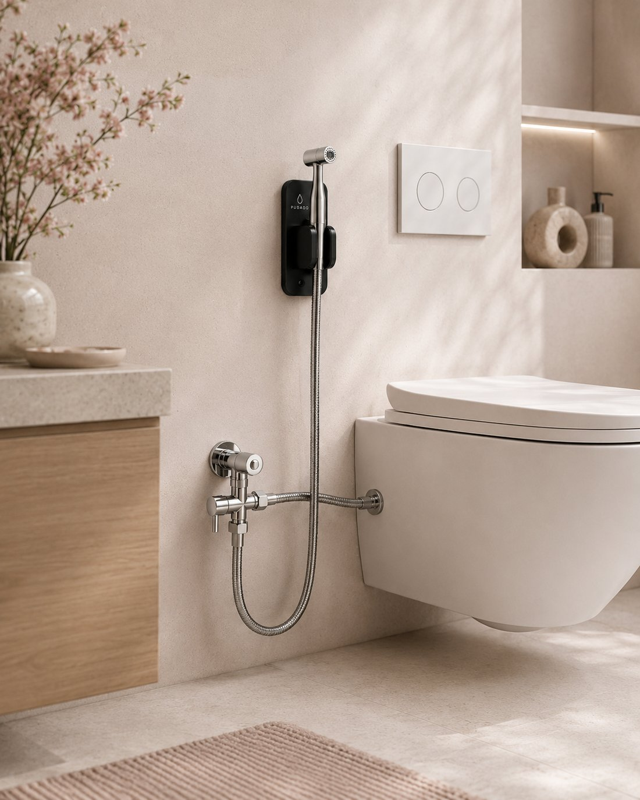
Pudado Wissen
Die wichtigsten Themen rund um EcoBum – kompakt und verständlich.
Wasser wird überall dort genutzt, wo es wirklich sauber werden soll. Im Bad kann es eine sanfte, gründliche Ergänzung zur Reinigung sein.
Mehr erfahren →Trockenes Papier wischt mit Reibung. Wasser kann Rückstände sanfter lösen – danach genügt oft wenig Papier zum Trocknen.
Mehr erfahren →Nach dem Toilettengang kurz mit Wasser reinigen, die Wassermenge über den Hebel dosieren und bei Bedarf trockentupfen.
Mehr erfahren →EcoBum wird am Eckventil über ein T-Stück angeschlossen. Unser Check zeigt, ob dein Anschluss dafür geeignet ist.
Mehr erfahren →Bei empfindlicher Haut kann Wasser eine sanftere Alternative zu wiederholtem trockenem Wischen sein.
Mehr erfahren →Wasser kann während der Periode für ein zusätzliches Frischegefühl sorgen – ohne Duftstoffe und ohne Feuchttücher.
Mehr erfahren →In einer empfindlichen Zeit kann sanfte Reinigung mit Wasser angenehmer sein. Bei Beschwerden bitte Hebamme oder Ärztin/Arzt fragen.
Mehr erfahren →Wer Wasser nutzt, braucht im Alltag oft weniger Papier. Wie viel, hängt von den Gewohnheiten ab.
Mehr erfahren →Sprühkopf regelmäßig abspülen, Verbindungen gelegentlich auf festen Sitz prüfen und bei Kalk vorsichtig entkalken.
Mehr erfahren →Ohne Strom und ohne feste Badrenovierung gedacht, mit Klebehalterung als Option. Der Wasseranschluss muss trotzdem geprüft werden.
Mehr erfahren →FAQ
EcoBum Home ist ein geplantes Plug-and-Play-Handbidet-Set für die Reinigung mit Wasser. Es wird am Wasseranschluss der Toilette angebracht und reinigt mit einem dosierbaren Wasserstrahl – als Ergänzung zu trockenem Papier.
EcoBum ist für gängige Anschlüsse mit Eckventil und flexiblem Zulaufschlauch konzipiert. Ob es zu deiner Toilette passt, hängt vom Anschluss ab — unser Installations-Check gibt eine erste Einschätzung.
Nein, nicht zwingend. Die Wandhalterung kann geklebt oder für besonders festen Halt geschraubt werden – je nach Untergrund. Der Wasseranschluss sollte vor der Installation trotzdem geprüft werden; bei Unsicherheit hilft eine Fachperson.
Nicht immer. Bei Unterputz-Spülkästen ist der Anschluss oft in der Wand verbaut, sodass eine Standard-Plug-and-Play-Montage nicht überall möglich ist. Hier sollte der Anschluss vorher geprüft oder eine Fachperson gefragt werden.
Die klebbare Wandhalterung ist ohne Bohren gedacht und kann für Mietwohnungen interessant sein. Bitte trotzdem vorher mit Vermieterin oder Vermieter klären, ob Installationen am Wasseranschluss erlaubt sind.
Nutze den Installations-Check für eine erste Einschätzung. Im Zweifel hilft ein Blick hinter die Toilette (Eckventil, Schlauch) oder eine fachkundige Person.
Vorgesehen sind unter anderem Handbidet-Sprayer, Wandhalterung, T-Stück, Absperrhahn, Rückflussverhinderer, Brauseschlauch, flexibler Zulaufschlauch, PTFE-Band und Anleitung. Die genaue Zusammenstellung kann sich je nach finaler Produktversion noch leicht ändern.
Der Absperrhahn ermöglicht es, das Wasser gezielt am EcoBum abzustellen, ohne die ganze Wohnung zu betreffen. Der Rückflussverhinderer ist als zentrales Sicherheitsprinzip vorgesehen, damit kein Wasser in die falsche Richtung fließt.
Nein, EcoBum funktioniert mit Wasserdruck und benötigt keinen Strom.
Das hängt von der persönlichen Nutzung ab. Viele Menschen nutzen Wasser zur Reinigung und danach deutlich weniger Papier — zum Beispiel nur noch zum Trocknen.
Wasser kann in diesen Phasen eine sanftere Ergänzung zu trockenem Papier sein und wird von vielen als angenehm empfunden. Bei medizinischen Beschwerden bitte immer ärztlichen Rat einholen.
Ziel der Produktentwicklung ist es, relevante Anforderungen und Prüfungen zu berücksichtigen. Aktuell liegen noch keine Zertifizierungen vor – sobald sich das ändert, aktualisieren wir diese Angabe.
Die genauen Garantie- und Rückgabebedingungen stehen noch nicht fest und werden vor dem Verkaufsstart bekanntgegeben.
EcoBum befindet sich in Vorbereitung. Trage dich für das Launch-Update ein, dann informieren wir dich als Erstes über Verfügbarkeit und Start.
Weitere Fragen? Schreib uns gerne. Zum Kontakt
Kontakt
Wir bereiten den nächsten Schritt vor. Wenn du mehr über EcoBum erfahren möchtest oder Interesse an einer Zusammenarbeit hast, kontaktiere uns gerne.
Trage dich ein und erfahre als Erster, wann EcoBum verfügbar ist. Erhalte Updates, Produktinfos und Launch-News von Pudado.